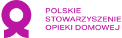
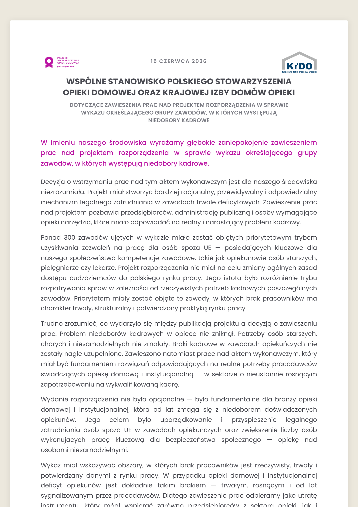
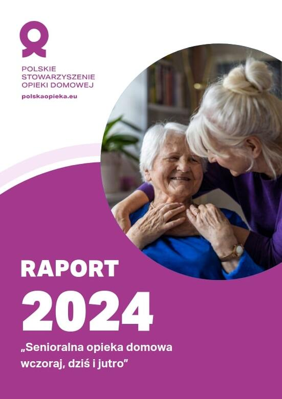

W którym roku się urodziłaś, urodziłeś?
Polska nie jest gotowa na ten czas.
Społeczeństwa się starzeją. Według szacunków WHO do 2030 roku jedna na sześć osób na świecie będzie miała co najmniej 60 lat. W 2021 roku 65 lat lub więcej miało już 21% ludności Europy.

PSOD i KIDO wyrażają głębokie zaniepokojenie zawieszeniem prac nad projektem rozporządzenia w sprawie wykazu zawodów deficytowych. Argument o rosnącym bezrobociu jest nieadekwatny wobec bezrobocia strukturalnego w zawodach opiekuńczych — a raport ELA (EURES 2025) potwierdza, że niedobory w opiece mają charakter trwały. Do 2035 r. branża będzie potrzebować około 100 tys. opiekunów. Apelujemy o wznowienie prac i utrzymanie zawodów opiekuńczych w wykazie.
Zobacz stanowiskoTemat, o którym mówimy od lat, trafił na pierwszą stronę ogólnopolskiego dziennika. Rynek opieki senioralnej wymaga pilnych rozwiązań systemowych — komentujemy okładkowy materiał i wskazujemy, od czego zacząć.
Czytaj dalejKażdy ma prawo do przystępnych cenowo i dobrej jakości usług opieki długoterminowej, w szczególności opieki w domu.
jest związkiem pracodawców zrzeszającym polskie firmy oferujące usługi długoterminowej opieki domowej dla osób niesamodzielnych. PSOD wspiera zrzeszonych pracodawców poprzez działania na rzecz przejrzystej legislacji tworzącej warunki sprzyjające uczciwej konkurencji z uwzględnieniem interesów personelu i pacjentów oraz dbanie o dobre imię branży opiekuńczej poprzez upowszechnianie rzetelnej wiedzy na jej temat.
Kim są Członkowie PSOD? Nasi członkowie to przede wszystkim małe rodzinne firmy. Ich działalność jest przykładem sukcesu polskiej przedsiębiorczości i pracowitości. Dlatego w ramach PSOD chcemy wspierać i promować polskich pracodawców świadczących usługi opieki w Polsce i za granicą, a także reprezentować ich interesy wobec instytucji krajowych i zagranicznych, decydentów oraz mediów.
Przyszłość opieki domowej zaczyna się dziś. Oto kluczowe obszary działań Polskiego Stowarzyszenia Opieki Domowej.
Polskie Stowarzyszenie Opieki Domowej działa na styku wielu dziedzin w celu zapewnienia maksymalnych korzyści swoim członkom. Przede wszystkim chcemy wpływać na ukształtowanie przyjaznego środowiska politycznego, społecznego i prawnego, które będzie wspierało legalne i efektywne świadczenie usług opieki domowej.
W tym celu podejmujemy następujące działania:
Wokół opieki domowej narosło wiele stereotypów. Przeczytaj twierdzenie, zaufaj intuicji — a potem odkryj, czy to prawda, czy mit.

W niniejszym opracowaniu przyglądamy się usługom opieki długoterminowej, świadczonym przez cudzoziemców w prywatnych gospodarstwach domowych. Zgodnie z definicją Światowej Organizacji Zdrowia, opieka długoterminowa obejmuje zarówno wsparcie o charakterze społecznym (pomoc w codziennych czynnościach, towarzyszenie), jak i usługi medyczne dedykowane osobom, które przez dłuższy okres są zależne od innych. Opieka ta może być realizowana w placówkach stacjonarnych, takich jak domy opieki, ale także w prywatnych mieszkaniach i domach podopiecznych, co stanowi esencję opieki domowej.
Raport koncentruje się na opiece domowej nad osobami starszymi (60+), z naciskiem na rolę pracowników cudzoziemskich. Sektor opieki nad seniorami będzie odgrywał coraz większą rolę w nadchodzących latach, a zapotrzebowanie na zagranicznych opiekunów będzie rosło. Mimo zmieniającej się dynamiki na rynku pracy w Europie, przewiduje się, że migracje opiekuńcze pozostaną istotnym zjawiskiem. Chociaż sytuacja w Polsce ulega poprawie, a różnice w zarobkach się zmniejszają, nie należy spodziewać się gwałtownego zahamowania trendu zatrudniania cudzoziemców do opieki nad osobami starszymi.
Jednocześnie, z biegiem czasu możemy obserwować zmiany w kierunkach migracji opiekuńczych. Na przykład, malejące zainteresowanie migracją z Polski do Niemiec jest efektem poprawiającej się sytuacji gospodarczej w Polsce. Zmniejszająca się różnica w zarobkach sprawia, że część personelu opiekuńczego może uznać, że strategia mobilności staje się mniej atrakcyjna finansowo.
Zobacz raportPSOD zrzesza firmy opieki domowej, by wspólnie reprezentować branżę wobec decydentów i mediów — w Polsce i w Unii Europejskiej. Im więcej pracodawców z nami działa, tym skuteczniej chronimy interesy opiekunów i seniorów oraz budujemy standardy godnej opieki.